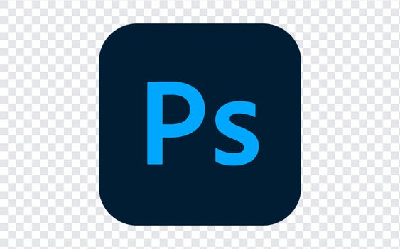

<html lang="en">
  <head>
    <meta name="viewport" content="width = device-width, initial-scale = 1.0">
    <meta charset="utf-8">
    <meta name="description" content="Hi My Name Is 2XBenArts And I am a software developer">
   <meta name="keywords" content="web design, c++, python , html , css , professional web design">
    <title>2XBenEnterprise</title>
    <link rel="stylesheet" type="text/css" href = "style.css">
    <link rel="icon" href= "Users/user/Pictures/2XBenLogo.jpg">
  </head>
  </body>
  </html>
  <script>
    function tonggleBackground() {
        document.body.style.backgroundColor = "blue";
    }
var slideIndex = 0;
showSlides();

function showSlides() {
  var i;
  var slides = document.getElementsByClassName("slide-show img");
  for (i = 0; i < slides.length; i++) {
    slides[i].style.opacity = 0;
  }
  slideIndex++;
  if (slideIndex > slides.length) {
    slideIndex = 1;
  }
  slides[slideIndex - 1].style.opacity = 1;
  setTimeout(showSlides, 5000); // Change image every 5 seconds
}
</script>
   <body>
    <header>
      <div class="container">
        <div id="branding">
          <h1><span class="highlight"> 2XBenEnterprise </span> Web Design Services</h1>
        </div>
        <nav>
          <ul>
            <li class="current"><a>Home</a></li>
            <li><a href= "about.html">About</a></li>
            <li><a href="services.html">Services</a></li>
          </ul>
        </nav>
      </div>
    </header>
    <section id="showcase">
      <div class="service-box">
        <h1>Affordable Professional Web Design</h1>
        <p>
          <div class ="slide-show">
            
            
            
            
            
            
          </div>
        </p>
      </div>
    </section>

    <section id="newsletter">
      <div class="container">
        <h1>Subscribe To Our Newsletter</h1>
        <form>
            <label>
                <input type="email" placeholder="Enter Email..." required>
            </label>
            <button type="submit" class="button_1">Subscribe</button>
        </form>
      </div>
    </section>

    <section id="boxes">
      <div class="container">
        <div class="box">
          
          <h3>HTML5 Markup</h3>
          <p> Unlock the Power of HTML with 2XBenEnterprise!

            As a seasoned web developer with a deep understanding of HTML, I bring a wealth of expertise to the table when it comes to crafting exceptional web experiences. HTML, the backbone of the web, is not just a language for me – it's a canvas through which I bring ideas to life and create immersive digital experiences.
            
               Mastering the Language of the Web:
            HTML is more than just tags and elements to me – it's a language that I speak fluently. With a keen eye for detail and a passion for clean, semantic code, I ensure that every line of HTML I write is optimized for performance, accessibility, and user experience.
            
              Crafting Engaging and Responsive Websites:
            From structuring content to creating responsive layouts, I leverage the power of HTML to build websites that captivate audiences and deliver seamless user interactions. Whether it's designing intuitive navigation, optimizing for search engines, or ensuring cross-browser compatibility, my HTML skills are the cornerstone of every successful web project I undertake.
            
              Pushing the Boundaries of Possibility:
            HTML is not just a tool for me – it's a gateway to endless possibilities. With a deep understanding of HTML5 features and best practices, I push the boundaries of what can be achieved on the web, incorporating multimedia elements, animations, and interactive components to create engaging and dynamic web experiences.
            
               Elevating Your Online Presence:
            Your website is your digital storefront, and with my expertise in HTML, I can help you make a lasting impression online. Whether you're looking to revamp your existing website, create a new web presence, or optimize for performance and SEO, my proficiency in HTML ensures that your web projects are in safe hands.
            
            Ready to harness the full potential of HTML for your web projects? Let's collaborate to transform your ideas into beautifully crafted, pixel-perfect websites that stand out in the digital landscape.
            
            Get in touch today to explore how my HTML expertise can elevate your online presence and bring your vision to life!</p>
        </div>
        <div class="box">
          
          <h3>CSS3 Styling</h3>
          <p>Elevate Your Web Design with 2XBenEnterprise CSS Expertise!

            Welcome to 2XBenEnterprise's Creative Studio, where the art of web design meets the power of CSS. As a skilled web developer with a passion for crafting visually stunning and user-friendly websites, I bring a wealth of expertise in CSS to transform your digital presence into a work of art.
            
              Mastery of CSS Styling:
            CSS is not just a styling language for me – it's a creative tool that allows me to breathe life into web designs. With a keen eye for design aesthetics and a deep understanding of CSS properties and selectors, I specialize in creating beautiful, responsive layouts that engage users and enhance the overall user experience.
            
              Creating Seamless User Experiences:
            From customizing fonts and colors to optimizing layouts for different screen sizes, I leverage the power of CSS to create seamless and intuitive user experiences. Whether it's designing interactive animations, implementing transitions, or ensuring cross-browser compatibility, my CSS skills are instrumental in bringing your vision to life.
            
              Responsive Design Excellence:
            In today's mobile-first world, responsive design is key to ensuring that your website looks great on any device. With my expertise in CSS media queries and flexible layouts, I can create websites that adapt seamlessly to different screen sizes, providing a consistent and engaging experience for users across all devices.
            
               Pushing the Boundaries of Creativity:
            CSS is a versatile language that allows for endless creative possibilities. From creating unique hover effects and parallax scrolling to implementing custom layouts and dynamic transitions, I love pushing the boundaries of what can be achieved with CSS to deliver visually striking and memorable web experiences.
            
               Transform Your Web Presence:
            Your website is more than just a digital platform – it's a reflection of your brand and identity. With my skills in CSS, I can help you transform your web presence into a captivating and immersive experience that resonates with your audience and sets you apart from the competition.
            
            Ready to take your web design to the next level? Let's collaborate to harness the full potential of CSS and create visually stunning websites that leave a lasting impression.
            
            Contact me today to explore how my CSS expertise can elevate your web projects and bring your creative vision to life!</p>
        </div>
        <div class="box">
          
          <h3>Graphic Design Using Photoshop</h3>
          <p>Welcome to 2XBenArt's Creative Studio – Where Design Meets Innovation!

            Are you looking to elevate your brand with captivating visuals that leave a lasting impression? Look no further! I am 2XBenArts, a passionate graphic designer dedicated to bringing your ideas to life through the power of design.
            
               Crafting Visual Stories:
            At the heart of every great design is a compelling story waiting to be told. As a skilled graphic designer, I specialize in translating concepts and emotions into visually stunning creations that resonate with your audience and communicate your brand's unique identity.
            
               Tailored Design Solutions:
            Whether you need a new logo, branding materials, marketing collateral, or digital assets, I offer a range of design services tailored to meet your specific needs. From concept development to final execution, I work closely with you to ensure that every design reflects your vision and captures the essence of your brand.
            
               Attention to Detail:
            In the world of design, every detail matters. With a meticulous eye for detail and a commitment to excellence, I pay close attention to typography, color theory, composition, and layout to create designs that are not only visually appealing but also highly effective in conveying your message.
            
               Versatility and Creativity:
            From sleek and modern designs to whimsical and artistic creations, I bring a versatile and creative approach to every project. Whether you're looking for a minimalist aesthetic or a bold and vibrant style, I have the skills and expertise to bring your vision to life in a way that sets you apart from the competition.
            
               Collaborate and Create:
            Your vision is my inspiration. Let's collaborate to transform your ideas into visually striking designs that captivate your audience and elevate your brand to new heights. Together, we can turn your creative vision into a reality that speaks volumes and leaves a lasting impression.
            
            Ready to embark on a design journey that transcends boundaries and sparks imagination? Contact me today to explore how my graphic design services can help you stand out in a crowded digital landscape and make a lasting impact. </p>
        </div>
      </div>
    </section>

    <footer>
      <p>2XBenEnterprise Web Design, Copyright &copy; 2024</p>
    </footer>
  </body>
